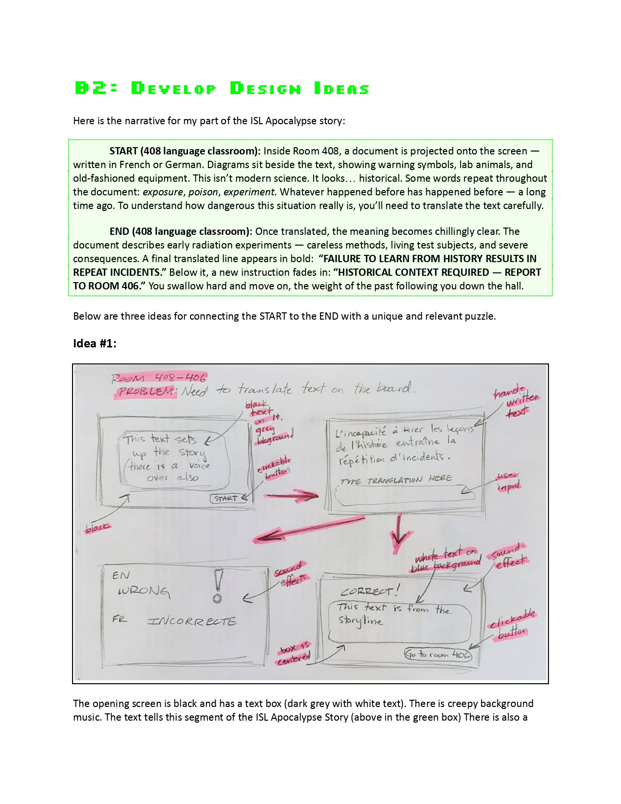
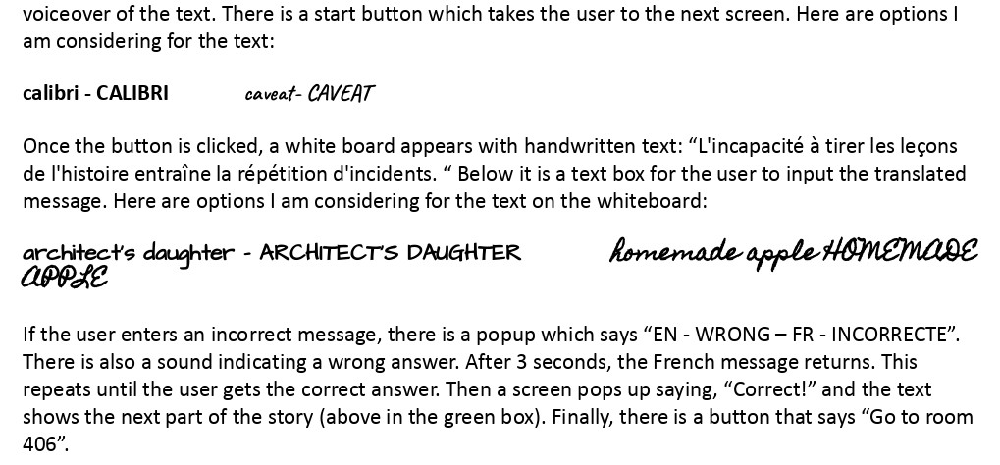

Status
✅ Unlocked on this browser
Unit at a glance
- Focus: Intro to HTML/CSS/JS via digital escape room
- Collaboration: Pairs build a room; class assembles one experience
- Platform: Browser-based, no installs
Tip: Once unlocked, this device/browser remembers you.
Clearing site data or using Private/Incognito resets access.
Story: ISL Apocalypse
One perfectly normal morning, students arrive to find the school… different.
The lights flicker with a soft hum, doors that normally open easily are sealed shut,
familiar hallways twist into new paths, and digital screens around the campus display scrambled messages,
countdown timers, and mysterious symbols.
No one is in danger — but the entire school seems to have shifted into a puzzling, glitchy version of
itself,
almost like ISL has slipped into an alternate mode.
Teachers and younger students are somewhere inside the building,
safe but unable to navigate the new maze of locked rooms, coded panels, and hidden clues.
A strange energy source appears to be pulsing from the center of the school — not harmful, but powerful —
as if the building itself is running a massive puzzle that needs to be solved to reset everything back to
normal.
Click
HERE
for the full narrative.
Summative Date
Criterion A, B, & C due in ManageBac —
Estimated Time
This are suggested due dates. Note the final due date above.
Criterion A - ~5 classes
Criterion B - ~6 classes
Criterion C - ~11 classes
Unit Materials
Code 2 Escape — Unit Hub
Deadline
Project due in -- days
March 22
Conceptual Framework
Designing for problem-solving under constraints. We will learn core web technologies
(HTML, CSS, JavaScript) by creating a themed digital escape room. You'll apply user-centred design,
rapid prototyping, and iterative testing to craft puzzles that are fair, learnable, and fun.
- Key Concepts: systems, function, communication
- Related Concepts: ergonomics, collaboration, evaluation
- Global Context: Scientific and technical innovation
GRASP Task Summary
| Element |
Description |
| Goal |
Your goal is to design and code an interactive web-based puzzle that forms part of a
class-wide digital escape room. Each puzzle helps players rebuild ISL’s systems and
“survive” a climate disaster scenario. Your work should show creativity, functionality, and thoughtful
user experience design.
|
| Role |
You are a digital designer and coder working with a partner and supported by an
AI Coach. Your role is to apply the design cycle to create a puzzle that is visually clear,
functional, and connected to the
class narrative.
You will research, prototype, code, test, and publish
your design like a professional developer.
|
| Audience |
Your audience is the entire ISL community and your product will be on display for ISL's annual
Bits & Bytes
event March 23-27. The experience you create should be easy to
understand, visually engaging, and challenging to solve. The puzzle itself must be appropriate for
grades 6 and above, but the content must be appropriate for all ages.
|
| Situation |
A global climate catastrophe has caused a breakdown of ISL’s systems — power, water, communication,
and security are offline. You and your partner are part of the emergency digital response team.
Each team must rebuild one critical subsystem by designing a digital puzzle that restores part of
ISL’s operations. When combined, all puzzles form a complete survival system.
|
| Product / Performance |
You will create a coded puzzle webpage using HTML, CSS, and
JavaScript.
It must:
- Include at least one interactive element (such as a button, input, riddle, or
logic challenge).
- Be styled and formatted clearly for the user.
- Contribute meaningfully to the overall escape room storyline.
- Be appropriate for your audience.
|
Assessment
Assessed against MYP Design criteria A–C (Inquiring, Developing Ideas, Creating the
Solution).
Full Task Sheet, detailed instructions, and student examples are linked above in the Task Sheet
menu.
Vocabulary
- attribute — Extra information inside a tag that gives more details, such as a link
address or image description (e.g.,
src, alt, href).
- class — A name used to group elements so they can share the same styles or behavior
(e.g.,
class="button").
- console (browser console) — A built-in tool in a web browser where programmers can
see messages, errors, and results from their code to help debug and test a webpage.
- CSS — Code used to control how a webpage looks, including colors, fonts, and layout.
- DOM — A live map of all the elements on a webpage that JavaScript can read and
change.
- element — A complete part of a webpage made of a tag and its information or content
(e.g., an image or paragraph).
- event — Something that happens on a webpage, like a click, key press, or mouse
movement.
- function — A named set of instructions that runs when called and can be reused.
- HTML — Code that gives a webpage its structure using tags like headings, paragraphs,
images, and links.
- ID — A unique name used to identify one specific element on a webpage.
- image — A picture added to a webpage using an image tag, such as PNG, JPG, or SVG
files.
- JavaScript — Code that makes a webpage interactive, such as responding to clicks or
changing content.
- link — Clickable text or an image that takes you to another page or section.
- tag — A keyword inside angle brackets that tells the browser what kind of content
something is (e.g.,
<img>).
- variable — A named place in code used to store information that can change.
- Vanilla JavaScript — Plain JavaScript written without using extra libraries or
frameworks.
AI Coding Coach
This AI Chatbot
is trained to be your coding guide for this unit. You are in charge. Good questions get
good answers. Gemini will not write code for you. You must be a problem solver.
Criterion A — Inquiring and Analysing
Due Date: One due date for the entire unit.
All strands due
Click
HERE for a ChatBot which gives you formative feedback on your portfolio.
A2. Research Plan
A2: construct a detailed research plan, which identifies and
prioritizes
the primary and secondary research needed to develop a solution to the
problem independently
Task:
This task will be completed with your plan in C1. There is nothing you need in your portfolio at this time
for A2.
A3. Analyse existing products
A3: analyse a range of existing products that inspire a solution to
the problem in detail
Task:
Explore and analyze
at least three (3)
existing digital escape rooms, puzzles, or interactive games that use coding or design features
similar to what you want to make.
In your portfolio:
- Take screenshots or link to examples.
- Describe how each one looks and works — what do users do?
- Identify the strengths (what works well) and weaknesses (what could be improved).
- Explain how these examples might inspire your own puzzle idea or design choices.
Tip:
Look for SIMPLE examples because because you are new to HTML and Javascript.
Look for things like navigation, interactivity, visuals, storytelling, or use of code
(HTML/CSS/JavaScript). You’re not just describing — you’re analyzing why those design
choices are effective.
This is the slideshow we used to collect our examples.
A4. Design Brief
Suggested due date:
A4: develop a detailed design brief, which summarizes the
analysis of relevant research.
Task:
Write a clear overview of the design challenge you will be working on this unit.
This is not about your specific puzzle yet — it’s a summary of the overall problem,
your learning goals, and the context you are designing for.
In your portfolio, include the following:
- The Problem / Story Context
Summarize the information presented in the Overview section of this page (conceptual framework &
GRASP table).
Describe what a digital escape room is.
Describe why a Digital Escape room might be an appropriate student contribution to ISL's annual
Bits & Bytes event.
- Your General Goal as a Designer
Explain that you will learn and apply HTML, CSS, and JavaScript.
Describe how you will work with Gemini AI as a coding partner to develop skills and solve problems.
State that you will eventually design and code one puzzle that contributes to the class escape room.
- Collaboration Plan
Explain how you will work with your partner (roles, communication, shared responsibilities).
Describe how your work will connect with the
whole class narrative to create one linked escape room experience.
- Constraints and Considerations
List any limitations you already know (time, beginner coding ability, using free platforms like
Replit/Glitch,
browser compatibility, simple JS only, etc.).
Mention any important considerations for later (user experience, accessibility, clarity, theme
consistency).
Tip:
This section sets the stage for the entire unit. Think of it as your “mission briefing” —
What’s going on? What’s your role? What are you trying to achieve? What limits will you face?
Need more help with Criterion A?
See also:
AI Assessment Scale ·
ISL Academic Integrity Policy
Criterion B — Developing Ideas
Due Date: One due date for the entire unit.
All strands due
Click
HERE for a ChatBot which gives you formative feedback on your portfolio.
B1. Develop Design Specifications
Suggested due date:
B1: develop detailed design specifications, which explain the
success criteria for the design of a solution based on the analysis of the research
Task:
Create a list of clear, measurable success criteria for your future puzzle. These are the
requirements your final product must meet. You will use this list later to test and evaluate
your work.
In your portfolio, include:
- Functionality requirements
What should the puzzle do?
What interactive element(s) must it include?
- Usability / user experience requirements
What should players be able to understand easily?
How should your instructions or feedback appear?
Teacher-provided required specification (paste this into your portfolio):
"The puzzle must be solvable in 60 seconds or less, excluding any time spent reading the instructions or
thinking/planning before starting."
- Aesthetic requirements
What style, visuals, or layout expectations do you already have?
- Story and theme requirements
What is the opening and closing script that was assigned to you?
How will your puzzle fit the
ISL Apocalypse narrative?
Solving your puzzle MUST give the user a letter for the final room.
See the
ISL Apocalypse Story
for your team's specific letter.
Tip:
- KEEP IT SUPER SIMPLE!
Write these as specific, testable statements, not vague ideas. For example:
“The puzzle must include at least one interactive input the user must solve to proceed.”
- There are other required specifications in the GRASP table, can you find them?
B2. Develop Design Ideas (Sketches + Concepts)
Suggested due date:
B2: develop a range of feasible design ideas, using an appropriate
medium(s) and
detailed annotation, which can be correctly interpreted by others
Task:
Generate several different ideas for your puzzle’s layout, theme, and interactive style —
even though you haven’t finalized the puzzle logic yet.
Note: this is where you start really collaborating with your partner -- but the writing in portfolio must
be
YOUR OWN WORK.
In your portfolio, include:
- The ISL Apocalypse narrative you and your partner were assigned
- At least 3 sketches or mockups
These can be drawn by hand or digitally.
These can be rough and do not have to be clean and detailed, but they should clearly communicate your
ideas.
Show possible layouts (buttons, boxes, text areas, images, clues, etc.).
These ideas must derive logically from your design specifications.
- A short description under each idea
What is the basic concept of this idea?
How might it creatively expand on the ISL Apocalypse story?
How might a user interact with the page?
These ideas must derive logically from your design specifications.
Tip:
Focus on exploring possibilities, not perfect accuracy. This is creative thinking time.
Student example:
This is a HIGH LEVEL example with details. The idea is SIMPLE and communicated clearly.


B3–B4. Final Detailed Design Plan
Suggested due date:
B3: present the chosen design and justify fully and
critically its selection with
detailed reference to the design specification
B4: develop accurate and detailed planning drawings/diagrams and
outline requirements for the creation of the chosen solution.
Task:
Choose your best idea from B2 and turn it into a clear, detailed design plan that shows what your
puzzle will look like and how the interaction will work. This will guide your coding in Criterion C.
In your portfolio, include:
- 1. Final Annotated Design Sketch
Create a detailed sketch or mockup of your final puzzle design.
Label key elements, such as:
buttons, inputs/text boxes, images or icons, clue areas, and messages or feedback space.
Your annotations should explain what each element does or why it’s there.
Include specific
typeface(s)
for text and colors for various elements as
hex
codes.
- 2. Interactive Flow Summary
Write a short explanation (3–6 steps) describing how the user will interact with your puzzle
from start to finish.
Example format:
– The user reads the scenario or clue.
– The user enters a code / clicks a button / drags an item, etc.
– JavaScript checks the user’s action.
– The page gives feedback (correct/incorrect).
– A clue is revealed or the “system” is restored.
This doesn’t need to be a full flowchart — just a clear description of how the interaction
works.
- 3. Justification of Your Final Design
Write a short paragraph explaining:
– Why you chose this design over your other ideas
– How it meets your design specifications from B1
– How it supports the ISL Apocalypse story
– How it will create a good user experience (clarity, accessibility, challenge, visuals)
Tip:
Your final design should make sense to someone who has never seen your idea before. If they can
understand what your puzzle will look like and how it will work, you’ve done this step correctly.
Need more help with Criterion B?
See also:
AI Assessment Scale ·
ISL Academic Integrity Policy
Criterion C — Creating the Solution
Due Date: One due date for the entire unit.
All strands due
Click
HERE for a ChatBot which gives you formative feedback on
your portfolio.
C1. Plan for Research & Development
Suggested due date:
C1: construct a detailed and logical plan, which describes the
efficient
use of time and resources, sufficient for peers to be able to follow to
create the solution
Task:
Before you start building, explain how you plan to turn your design into a
functioning coded puzzle — and what you still need to learn. This strand also supports
your research (A2) by identifying what you need to find out to make your solution work.
A good plan must include time estimates.
In your portfolio, include:
-
Coding Plan (Step-by-Step Build Plan)
Write a simple, clear plan describing how you will build your puzzle in HTML, CSS, and JavaScript.
Example structure:
| Task |
Due Date |
| Establish a
workflow to collaborate with VS Code and GitHub
|
Feb 02 |
| Set up project files |
Feb 02 |
| Create files in VS Code (index.html, script.js, style.css) |
Feb 03 |
| Gather or create images and photos |
Feb 05 |
| Adjust images (Canva / Photoshop) |
Feb 05 |
| Upload images to VS Code |
Feb 06 |
| Build the basic HTML structure (layout, headings, input boxes, buttons) |
Feb 07 |
| Add CSS to create the layout and style |
Feb 15 |
| Write JavaScript to check the user’s input |
Feb 20 |
| Add feedback messages and clue reveals |
Feb 28 |
| Test everything and fix errors |
March 20 |
Publish final product using Github Pages.
Share the published URL with the next team in the story. |
March 27 |
Keep your plan realistic and achievable.
-
What You Need to Learn (A2 Integration)
List the skills or knowledge you still need in order to build your puzzle (for example:
how to collaborate using VS Code & Github), how to check input with JavaScript, how to show/hide elements,
how to style buttons).
Briefly explain how you will learn these skills, such as:
– asking your teacher
– using Gemini AI
– checking approved tutorials
– experimenting with small test code
Goal:
By the end of C1, you should know what you’re building, how you’ll build it,
what you need to learn to make it happen, and by when each task will be accomplished.
C2. Demonstrate Technical Skills
Suggested due date:
C2: demonstrate excellent technical skills when making the solution.
Task:
Collaborate with your partner and with
Gemini AI
to turn your design into a working coded product using HTML, CSS, and JavaScript. Focus on
writing clean, readable code and using your plan from C1 to guide your work.
Portfolio note: There is nothing extra you need to add to your portfolio
specifically for C2. Your evidence will come from your demonstration of skills in class, your final product,
and the way you
describe and justify it in C3 and C4.
C3. Present Your Final Solution
Suggested due date:
C3: follows the plan to create the solution, which functions as
intended and
is presented appropriately
Task:
When your puzzle is finished, present it clearly and professionally.
In your portfolio, include:
-
Link to your HTML practice webpage
This is the page you build slowly each day.
Link to Your Final Web Page
Provide the URL to your working puzzle (GitHub Pages).
Provide the URL to your public Github repository.
-
Final Screenshots
Show the finished interface and the main interaction(s).
C4. Justify Changes
Suggested due date:
C4: fully justify changes made to the chosen design and plan when
making
the solution.
Task:
During building, you might improve your layout, change interactions, or simplify features.
This strand is about explaining why those changes were sensible.
In your portfolio, write a short paragraph covering:
- What changes you made to your original design or plan.
- Why these changes improved the design or functionality.
- Whether they helped you meet your design specifications from B1.
- How they affected the user experience (clarity, challenge, accessibility, visuals).
Keep the focus on design logic and reasoning.
Need more help with Criterion C?
See also:
AI Assessment Scale ·
ISL Academic Integrity Policy
Criterion A — A4: Design Brief
Task: In your new portfolio (linked below) in the section titled A4: Design Brief, write a short design brief explaining the focus of the unit and your specific role.
Keep your work to one page max. Use “we” for class goals and “I” for your goal.
Spend some time reviewing the links above and the Unit Overview, then organize your writing.
1. Story (ISL Apocalypse)
Summarize the ISL Apocalypse scenario in your own words. Explain how the escape room fits into the story.
2. Bits & Bytes
Explain how this project connects to Bits & Bytes. Mention that the final escape room will be published as a public link for others to play.
3. Class Goal (We)
Describe what we are trying to achieve as a class.
- We are building a class-wide digital escape room.
- We are learning to code using HTML, CSS, and JavaScript.
- We are working together to create one connected experience.
4. My Goal (I)
Clearly state your individual focus. Your goal is to design and develop the landing page for the class-wide escape room.
You do not need to plan the page yet — detailed planning happens in Criterion B.